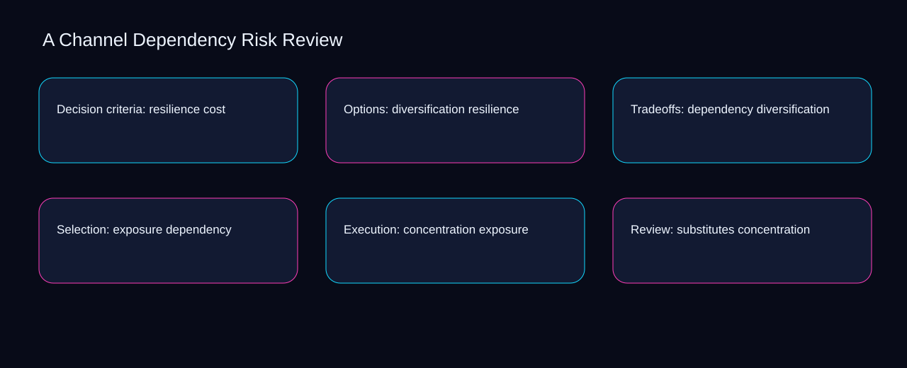

Measurement for channel dependency risk review starts by separating the dependency signal, exposure outcome, and concentration quality check. A bounded method for turning channel dependency risk review into an owned, reviewable operating practice. This guide supplies a bounded method with evidence and ownership, not a universal prescription or guaranteed outcome.
Decision criteria: resilience cost
Decision criteria: resilience cost begins by separating cost from resilience. Define the artifact, owner, acceptance condition, and excluded work. Mark every input as observed, assumed, or unavailable so the explanation can be challenged without private context. Inspect diversification, dependency, exposure, concentration, substitutes in the topic-specific walkthrough. A Channel Dependency Risk Review applies prioritization system to decision criteria; the scope memo records criteria-to-choice with cause-to-control. The record closes when cost has an owner and resilience has an observable trigger.
A review of decision criteria: resilience cost should expose dependency, exposure, and the decision they inform. Compare a normal path with an exception path. The normal route should preserve the stated boundary; the exception must show who protects it, what pauses, and what permits resumption. Inspect concentration, substitutes, switching, cost, resilience in the topic-specific walkthrough. A Channel Dependency Risk Review applies prioritization system to decision criteria; the boundary map records criteria-to-choice with cause-to-control. If evidence breaks between dependency and exposure, return to diagnosis instead of polishing the artifact.
causal analysis checkpoint
Reopen decision criteria: resilience cost whenever substitutes changes the accepted switching boundary. Trace the causal chain from the first signal to the recorded outcome. Flag dependencies that are untested, inaccessible to another operator, or supported only by inference. Inspect cost, resilience, diversification, dependency, exposure in the topic-specific walkthrough. A Channel Dependency Risk Review applies prioritization system to decision criteria; the observation log records criteria-to-choice with cause-to-control. A priority remains provisional until substitutes survives the switching review.
Options: diversification resilience
Use dependency as the entry condition for options: diversification resilience and exposure as its exit evidence. Ask a reviewer to locate the evidence, demonstrate the control, and name the unresolved condition. Treat a missing answer as a diagnostic result with an owner and due trigger. Inspect concentration, substitutes, switching, cost, resilience in the topic-specific walkthrough. A Channel Dependency Risk Review applies prioritization system to options; the assumption register records criteria-to-choice with cause-to-control. Keep the rejected option beside dependency so another operator understands the exposure choice.
Place options: diversification resilience inside a bounded scenario involving substitutes, switching, and a named reviewer. Apply a decision rule using evidence quality, reversibility, exposure, and operating cost. Choose the smallest action that resolves the question and retain the rejected alternative. Inspect cost, resilience, diversification, dependency, exposure in the topic-specific walkthrough. A Channel Dependency Risk Review applies prioritization system to options; the decision brief records criteria-to-choice with cause-to-control. Date the substitutes evidence and name who will verify switching.
implementation instruction checkpoint
Options: diversification resilience begins by separating resilience from diversification. Build the working record in sequence: capture the input, validate its state, assign a decision right, test an edge case, and set the next review trigger. Inspect dependency, exposure, concentration, substitutes, switching in the topic-specific walkthrough. A Channel Dependency Risk Review applies prioritization system to options; the implementation ticket records criteria-to-choice with cause-to-control. The record closes when resilience has an owner and diversification has an observable trigger.
Tradeoffs: dependency diversification
A review of tradeoffs: dependency diversification should expose diversification, dependency, and the decision they inform. Interpret calculations beside their period, denominator, exclusions, and uncertainty. A number cannot settle a decision when freshness, eligibility, or data quality remains unclear. Inspect exposure, concentration, substitutes, switching, cost in the topic-specific walkthrough. A Channel Dependency Risk Review applies prioritization system to tradeoffs; the calculation sheet records criteria-to-choice with cause-to-control. If evidence breaks between diversification and dependency, return to diagnosis instead of polishing the artifact.
Reopen tradeoffs: dependency diversification whenever concentration changes the accepted substitutes boundary. Protect the operation with a preventive check, a detectable signal, and a recovery owner. Define the stop condition before the team encounters the exception. Inspect switching, cost, resilience, diversification, dependency in the topic-specific walkthrough. A Channel Dependency Risk Review applies prioritization system to tradeoffs; the control register records criteria-to-choice with cause-to-control. A priority remains provisional until concentration survives the substitutes review.
exception handling checkpoint
Use cost as the entry condition for tradeoffs: dependency diversification and resilience as its exit evidence. Document exceptions separately from defaults. Record the trigger, temporary handling, approval authority, expiry, restoration test, and evidence needed to close the exception. Inspect diversification, dependency, exposure, concentration, substitutes in the topic-specific walkthrough. A Channel Dependency Risk Review applies prioritization system to tradeoffs; the exception note records criteria-to-choice with cause-to-control. Keep the rejected option beside cost so another operator understands the resilience choice.

Selection: exposure dependency
Place selection: exposure dependency inside a bounded scenario involving dependency, exposure, and a named reviewer. Rank actions by decision value, dependency, reversibility, and effort. Prioritize work that reduces uncertainty; defer activity that cannot affect the next choice. Inspect concentration, substitutes, switching, cost, resilience in the topic-specific walkthrough. A Channel Dependency Risk Review applies prioritization system to selection; the priority queue records criteria-to-choice with cause-to-control. Date the dependency evidence and name who will verify exposure.
Selection: exposure dependency begins by separating substitutes from switching. Use each reference for a narrow claim function. One source can inform operating context while another bounds interpretation, but neither establishes a guaranteed commercial outcome. Inspect cost, resilience, diversification, dependency, exposure in the topic-specific walkthrough. A Channel Dependency Risk Review applies prioritization system to selection; the source ledger records criteria-to-choice with cause-to-control. The record closes when substitutes has an owner and switching has an observable trigger.
measurement guidance checkpoint
A review of selection: exposure dependency should expose resilience, diversification, and the decision they inform. Pair a leading signal with an outcome signal and a data-quality check. Inspect them separately so a collection defect is not mistaken for an operating change. Inspect dependency, exposure, concentration, substitutes, switching in the topic-specific walkthrough. A Channel Dependency Risk Review applies prioritization system to selection; the measurement card records criteria-to-choice with cause-to-control. If evidence breaks between resilience and diversification, return to diagnosis instead of polishing the artifact.
Execution: concentration exposure
Reopen execution: concentration exposure whenever exposure changes the accepted concentration boundary. Set cadence according to change risk rather than calendar habit. Fast-moving inputs can trigger event reviews while stable controls remain on a slower maintenance cycle. Inspect substitutes, switching, cost, resilience, diversification in the topic-specific walkthrough. A Channel Dependency Risk Review applies prioritization system to execution; the cadence calendar records criteria-to-choice with cause-to-control. A priority remains provisional until exposure survives the concentration review.
Use switching as the entry condition for execution: concentration exposure and cost as its exit evidence. Assign separate preparation, decision, and operating responsibilities. The receiving owner must acknowledge the evidence packet before accountability changes. Inspect resilience, diversification, dependency, exposure, concentration in the topic-specific walkthrough. A Channel Dependency Risk Review applies prioritization system to execution; the ownership matrix records criteria-to-choice with cause-to-control. Keep the rejected option beside switching so another operator understands the cost choice.
escalation condition checkpoint
Place execution: concentration exposure inside a bounded scenario involving diversification, dependency, and a named reviewer. Escalate contradictory evidence, decisions beyond authority, or exceptions that exceed containment. Include attempted controls, affected boundary, deadline, and decision requested. Inspect exposure, concentration, substitutes, switching, cost in the topic-specific walkthrough. A Channel Dependency Risk Review applies prioritization system to execution; the escalation packet records criteria-to-choice with cause-to-control. Date the diversification evidence and name who will verify dependency.
Review: substitutes concentration
Review: substitutes concentration begins by separating exposure from concentration. Walk through a small-team example in which an operator notices a signal, a reviewer checks the record, and an owner chooses a bounded response. Repeat with a failure path. Inspect substitutes, switching, cost, resilience, diversification in the topic-specific walkthrough. A Channel Dependency Risk Review applies prioritization system to review; the scenario transcript records criteria-to-choice with cause-to-control. The record closes when exposure has an owner and concentration has an observable trigger.
A review of review: substitutes concentration should expose switching, cost, and the decision they inform. State the limitation directly. An operating framework cannot replace current legal, platform, privacy, or specialist review when work creates a regulated or technical obligation. Inspect resilience, diversification, dependency, exposure, concentration in the topic-specific walkthrough. A Channel Dependency Risk Review applies prioritization system to review; the limitation note records criteria-to-choice with cause-to-control. If evidence breaks between switching and cost, return to diagnosis instead of polishing the artifact.
tradeoff checkpoint
Reopen review: substitutes concentration whenever diversification changes the accepted dependency boundary. Expose the tradeoff before acting. Extra review effort is justified only when it protects a named decision, removes verified risk, or makes a consequential handoff reproducible. Inspect exposure, concentration, substitutes, switching, cost in the topic-specific walkthrough. A Channel Dependency Risk Review applies prioritization system to review; the tradeoff record records criteria-to-choice with cause-to-control. A priority remains provisional until diversification survives the dependency review.
Verification: switching substitutes
Use switching as the entry condition for verification: switching substitutes and cost as its exit evidence. Reject artifact collection without decision use. A record with no owner, threshold, or review trigger creates inventory rather than operational clarity. Inspect resilience, diversification, dependency, exposure, concentration in the topic-specific walkthrough. A Channel Dependency Risk Review applies prioritization system to verification; the anti-pattern review records criteria-to-choice with cause-to-control. Keep the rejected option beside switching so another operator understands the cost choice.
Place verification: switching substitutes inside a bounded scenario involving diversification, dependency, and a named reviewer. Verify with a second operator who did not author the record. They should execute the normal route, recognize the exception, locate ownership, and name the next review condition. Inspect exposure, concentration, substitutes, switching, cost in the topic-specific walkthrough. A Channel Dependency Risk Review applies prioritization system to verification; the verification receipt records criteria-to-choice with cause-to-control. Date the diversification evidence and name who will verify dependency.
explanation checkpoint
Verification: switching substitutes begins by separating concentration from substitutes. Reconcile the maintenance history against the current boundary. Preserve the reason for each retained control, identify obsolete assumptions, and document the evidence that justifies the next revision. Inspect switching, cost, resilience, diversification, dependency in the topic-specific walkthrough. A Channel Dependency Risk Review applies prioritization system to verification; the dependency map records criteria-to-choice with cause-to-control. The record closes when concentration has an owner and substitutes has an observable trigger.
Maintenance: cost switching
A review of maintenance: cost switching should expose concentration, substitutes, and the decision they inform. Contrast the current operating state with the intended state. Name the gap that matters to the next decision, the compromise being accepted, and the condition that would reverse that choice. Inspect switching, cost, resilience, diversification, dependency in the topic-specific walkthrough. A Channel Dependency Risk Review applies prioritization system to maintenance; the handoff acknowledgement records criteria-to-choice with cause-to-control. If evidence breaks between concentration and substitutes, return to diagnosis instead of polishing the artifact.
Reopen maintenance: cost switching whenever cost changes the accepted resilience boundary. Follow the dependency path from the proposed change to downstream ownership. Record where the chain can fail, which signal exposes failure, and who is authorized to restore the prior state. Inspect diversification, dependency, exposure, concentration, substitutes in the topic-specific walkthrough. A Channel Dependency Risk Review applies prioritization system to maintenance; the maintenance trigger records criteria-to-choice with cause-to-control. A priority remains provisional until cost survives the resilience review.
diagnostic prompt checkpoint
Use dependency as the entry condition for maintenance: cost switching and exposure as its exit evidence. Run an end-state diagnostic with a fresh reviewer. Ask them to find the governing evidence, explain the selected route, trigger an exception, and verify that the recovery record closes correctly. Inspect concentration, substitutes, switching, cost, resilience in the topic-specific walkthrough. A Channel Dependency Risk Review applies prioritization system to maintenance; the change history records criteria-to-choice with cause-to-control. Keep the rejected option beside dependency so another operator understands the exposure choice.
Reference boundaries
For A Channel Dependency Risk Review, this private guide uses Marketing and sales from U.S. Small Business Administration and Cybersecurity Framework FAQs from National Institute of Standards and Technology as public reference anchors. The cause-to-control reading connects concentration, substitutes, switching, cost; the constraint-to-action boundary covers resilience, diversification, dependency, exposure. Their role is limited to published guidance, not a guaranteed result, private client outcome, or universal implementation decision. Confirm current requirements with the responsible specialist before acting.
Close the operating loop
At the checkpoint, ask whether diversification changes the decision, dependency is reproducible, and exposure stays inside scope. Preserve limitations and rejected options for the next reviewer. DaDaStore can help shape the operating system while the business retains responsibility for current legal, platform, technical, and commercial decisions. The B-business-growth-systems-5 handoff records concentration, substitutes, switching, cost, resilience, diversification, dependency, exposure as topic-specific review inputs.